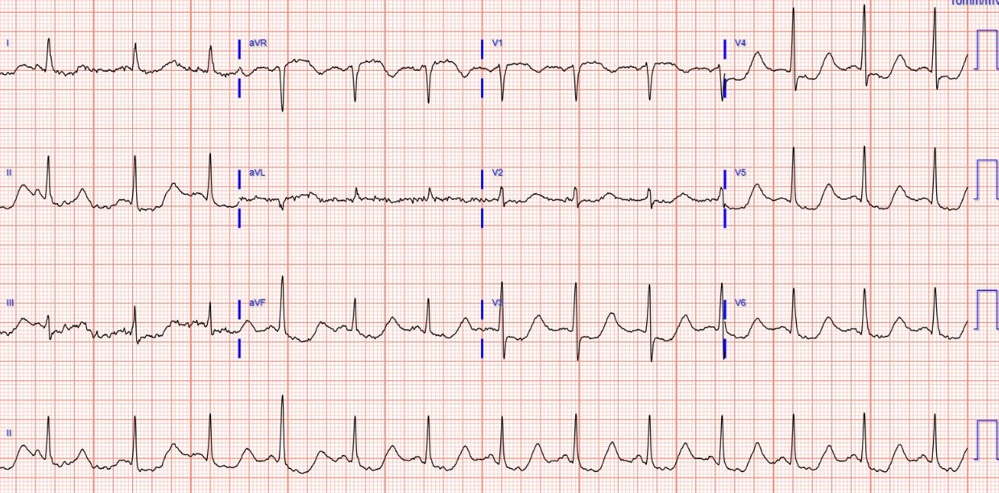
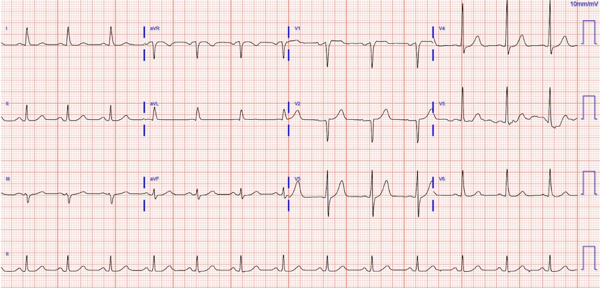
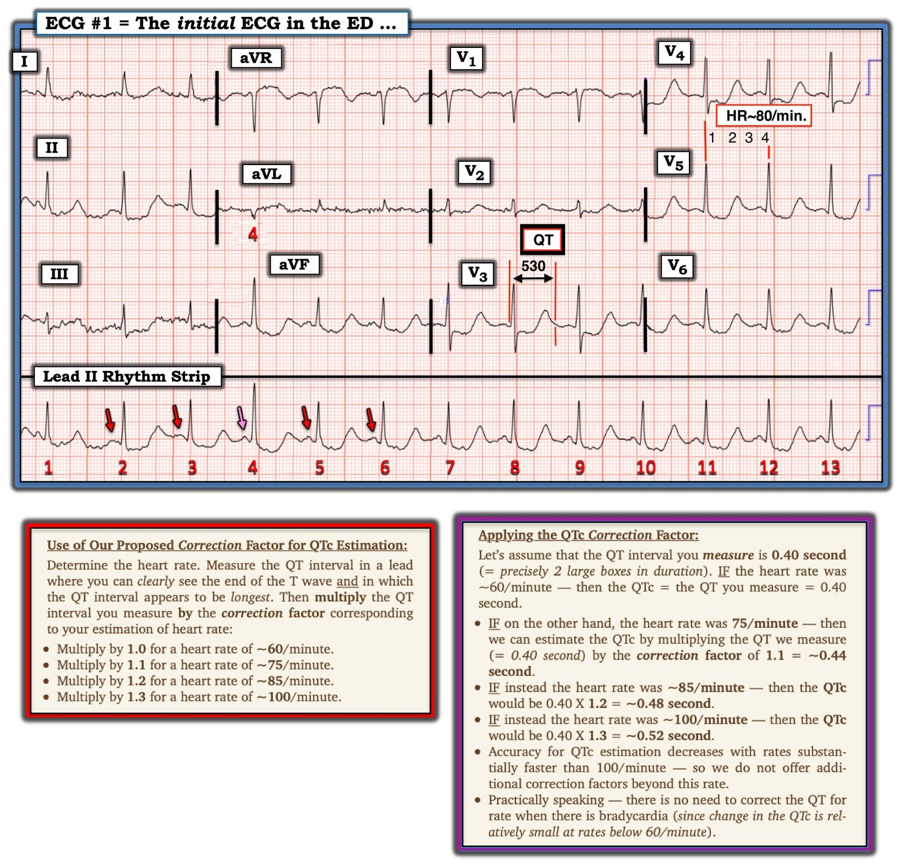

25/10/2023 — Nam giới ngoài 60 tuổi bị ngất và ST chênh xuống. Điện tâm đồ có ý nghĩa gì?
Bản dịch tiếng Việt của bài "A man in his 60s with syncope and ST depression. What does the ECG mean?" – Dr. Smith’s ECG Blog. Giữ nguyên toàn bộ 4 hình ảnh của bản gốc.
Tác giả: Sean Trostel MD, bình duyệt bởi Meyers, Smith, Grauer, và những người khác.
Một nam giới ngoài 60 tuổi có tiền sử rối loạn sử dụng rượu mức độ nặng và áp xe ngoài màng cứng đang dùng ciprofloxacin dài hạn đến khoa cấp cứu sau một cơn ngất khi đang xếp hàng ở cửa hàng tạp hóa.
Bệnh nhân không đau ngực.
Đây là điện tâm đồ lúc phân loại (triage) của bệnh nhân:


Diễn giải của tôi:
Nhịp xoang, QRS bình thường, ST chênh xuống dạng gợn sóng lan tỏa dẫn vào sóng T/sóng U muộn với QT kéo dài rất nhiều. Không có bằng chứng OMI. QTc/QUc vào khoảng 630 msec.
Nguyên nhân có khả năng nhất gây ra các dấu hiệu trên điện tâm đồ của bệnh nhân là gì, và bước xử trí đầu tiên của bạn sẽ là gì?
Điện tâm đồ phù hợp với hạ kali máu và/hoặc hạ magnesi máu nặng gây QT (QU) kéo dài, có nguy cơ cao xoắn đỉnh (Torsades) (tức là nhịp nhanh thất đa dạng trong bối cảnh khoảng QT dài).
Có một điện tâm đồ trước đây để so sánh:


Người ta có thể bị cám dỗ diễn giải ST chênh xuống là thiếu máu cục bộ, nhưng như Smith nói, “khi QT dài đến mức không thể tin được, hãy nghĩ đến hạ kali máu và sóng U thay vì sóng T.”
Hãy xem ca này:
Are These Wellens’ Waves?? (Đây có phải là sóng Wellens không??)
Ứng dụng AI Queen of Hearts của PM Cardio đã bị đánh lừa và đưa ra kết luận “OMI với độ tin cậy thấp,” nhưng cô ấy chưa bao giờ được huấn luyện về hạ kali máu. Chúng tôi vừa hoàn tất huấn luyện phiên bản 2 với một số ca hạ kali máu, nên điều đó sẽ có trong tương lai. Hơn nữa, Queen chỉ nên được dùng khi xác suất tiền nghiệm của ACS/OMI cao.
Kết quả khí máu tĩnh mạch (VBG) của bệnh nhân có ngay khi tôi đang nói chuyện với anh ấy và xác nhận nghi ngờ của tôi, cho thấy kali 1.6 mEq/L. Magnesi sau đó có kết quả 0.8 mg/dL, và calci ion hóa là 0.73 mmol/L.
Bệnh nhân được dán miếng dán khử rung phòng trường hợp PMVT/VF, được cho ngay 2g magnesi sulfat và 40mEq kali đường uống, và được đặt thêm đường truyền tĩnh mạch để bắt đầu truyền KCl tĩnh mạch.
Bệnh nhân này có nhiều lý do để bị QT dài trong ca này:
Hạ kali máu
Hạ magnesi máu
Dùng ciprofloxacin kéo dài
Hạ calci máu (góp phần làm QT dài nhưng nguy cơ TdP thấp hơn như đã bàn trong bài này)
Với lý do vào viện chính là ngất, cần nghi ngờ rằng bệnh nhân đã rơi vào xoắn đỉnh (torsades de pointes) trước khi đến viện. Bệnh nhân được nhập khoa hồi sức tích cực (ICU) để theo dõi sát và bù điện giải, và diễn tiến nằm viện không có biến cố.
Xem thêm các ca liên quan khác:
What are these bizarre bigeminal PVCs?? (Những PVC nhịp đôi kỳ quặc này là gì??)
Polymorphic Ventricular Tachycardia (Nhịp nhanh thất đa dạng)
Long QT Syndrome with Continuously Recurrent Polymorphic VT: Management (Hội chứng QT dài với VT đa dạng tái phát liên tục: Xử trí)
Cardiac Arrest. What does the ECG show? Also see the bizarre Bigeminy. (Ngừng tim. Điện tâm đồ cho thấy gì? Hãy xem cả nhịp đôi kỳ quặc.)
A New Seizure in a Healthy 20-something (Cơn co giật mới ở một người khỏe mạnh khoảng 20 tuổi)
Thêm các ca QT dài không được máy tính đo đúng (tất cả đều là những điện tâm đồ/ca bệnh rất hấp dẫn):
Bupropion Overdose Followed by Cardiac Arrest and, Later, ST Elevation. Is it STEMI? (Quá liều bupropion, sau đó ngừng tim và về sau ST chênh lên. Có phải STEMI không?)
Chest pain in high risk patient. Are these Hyperacute T-waves? What is going on here? (Đau ngực ở bệnh nhân nguy cơ cao. Đây có phải sóng T tối cấp không? Chuyện gì đang xảy ra?)
Syncope and Bradycardia (Ngất và nhịp chậm)
Syncope in a 20-something woman (Ngất ở một phụ nữ khoảng 20 tuổi)
Long QT: Do not trust the computerized QT interval when the QT is long (QT dài: Đừng tin khoảng QT do máy tính đo khi QT dài)
An Alcoholic Patient with Syncope (Một bệnh nhân nghiện rượu bị ngất)
Cardiac Arrest. What does the ECG show? Also see the bizarre Bigeminy. (Ngừng tim. Điện tâm đồ cho thấy gì? Hãy xem cả nhịp đôi kỳ quặc.)
Another diagnostic ECG of a potentially deadly condition (Thêm một điện tâm đồ chẩn đoán một tình trạng có thể gây tử vong)

===================================
BÌNH LUẬN CỦA TÔI, bởi KEN GRAUER, MD (19/10/2023):
===================================
Phần bàn luận ca bệnh xuất sắc hôm nay của BS. Trostel và Meyers làm nổi bật một số điểm quan trọng về việc đánh giá khoảng QT. Tôi tập trung bình luận vào một số nhận xét bổ sung
- Để rõ ràng, trong Hình 1 — tôi đã ghi nhãn bản ghi ban đầu của ca hôm nay.


SUY NGHĨ CỦA TÔI về Ca bệnh Hôm nay:
Điều thiết yếu để đánh giá điện tâm đồ ban đầu — là bệnh sử. Bệnh nhân là một nam giới ngoài 60 tuổi đã được xác định rối loạn sử dụng rượu mức độ nặng — và áp xe ngoài màng cứng đang được điều trị bằng Ciprofloxacin dài hạn — đến khoa cấp cứu sau một cơn ngất.
- LƯU Ý: Mỗi từ in đậm trong đoạn trên đều thiết yếu cho việc đánh giá của chúng ta.
Như BS. Trostel và Meyers đã nêu — điện tâm đồ ở Hình 1 cho thấy nhịp xoang với khoảng PR bình thường và thời gian QRS bình thường — nhưng với khoảng QTc kéo dài rõ rệt. Trục mặt phẳng trán bình thường — và không có lớn buồng tim. Có đoạn ST chênh xuống lan tỏa, dường như kèm phần cuối sóng T dương ở nhiều chuyển đạo.
CÂU HỎI #1:
- BẠN có nhận thấy rằng nhát #4 là một PVC có hỗn hợp (fusion) không?
=================================
TẠI SAO nhát PVC này Có thể Liên quan đến Ca Hôm nay?
Các mũi tên ĐỎ trên dải nhịp chuyển đạo II dài ở Hình 1 đánh dấu các sóng P xoang. Lưu ý rằng sóng P ở mũi tên HỒNG đến đúng lúc! — nhưng khoảng PR đứng trước nhát #4 hơi ngắn hơn khoảng PR của các nhát khác trên dải nhịp chuyển đạo dài này.
- Việc nhát #4 là một nhát hỗn hợp — được thấy rõ nhất khi nhìn vào nhát #4 ghi đồng thời ở chuyển đạo aVL, trong đó phức bộ QRS nhỏ, âm trông rõ ràng khác với QRS nhỏ, dương của các nhát #5 và #6 ở chuyển đạo aVL.
- Lý do của sự khác biệt về hình thái QRS này — là đây là một PVC muộn trong chu kỳ (tức là, cuối tâm trương) — trong đó sóng P đúng lúc ở mũi tên HỒNG bắt đầu dẫn truyền xuống thất — nhưng trước khi nó có thể hoàn tất đường đi tới đó, nó gặp phải một xung động thất, do đó tạo ra một dạng trung gian (hỗn hợp) mang các đặc điểm hình thái của cả dẫn truyền bình thường lẫn dẫn truyền thất.
- ĐIỂM THEN CHỐT (PEARL) #1: PVC muộn trong chu kỳ là một dạng thường gặp của rối loạn nhịp tái tưới máu — vì vậy bất cứ khi nào thấy chúng, tôi đều xem bản ghi thật kỹ hơn để chắc chắn rằng không có dấu hiệu nào của nhồi máu gần đây (Sẽ nói thêm về điều này ngay sau đây liên quan đến ca hôm nay!).
==============================
CÂU HỎI #2:
- Nếu không có QTc kéo dài rõ rệt — Chẳng phải điện tâm đồ #1 trông giống thiếu máu cục bộ dưới nội tâm mạc lan tỏa sao?
TRẢ LỜI:
Như chúng tôi đã bàn luận nhiều lần trên Dr. Smith’s ECG Blog — chẩn đoán thiếu máu cục bộ dưới nội tâm mạc lan tỏa (DSI ) được đặt ra khi thấy ST chênh xuống ở nhiều (thường ít nhất 6-7) chuyển đạo kèm ST chênh lên ở chuyển đạo aVR (và đôi khi cả ở chuyển đạo V1).
- Ở Hình 1 — có ST chênh xuống ở không dưới 9 chuyển đạo — kèm ST chênh lên ở cả hai chuyển đạo aVR và V1 — do đó NẾU QTc không kéo dài như hiện tại — chẩn đoán phân biệt của chúng ta sẽ tập trung vào các tình trạng liên quan đến DSI (thiếu máu cục bộ dưới nội tâm mạc lan tỏa).
- ĐIỂM THEN CHỐT (PEARL) #2: Điều quan trọng cần nhớ là điện tâm đồ cho chúng ta thấy “hiệu ứng tổng hợp” của tất cả những gì đang diễn ra. Ý nghĩa của khái niệm này đối với ca hôm nay là NẾU một bệnh nhân có nhiều hơn một tình trạng nền (tức là, tăng hoặc hạ kali máu nặng và thiếu máu cục bộ) — thì biểu hiện điện tâm đồ của một tình trạng có thể “che lấp” tình trạng kia. ĐIỀU CỐT LÕI: Với tất cả mức ST chênh xuống thấy trên điện tâm đồ #1 — sẽ không thể loại trừ DSI cho đến khi ghi lại điện tâm đồ sau khi đã điều chỉnh tình trạng hạ kali máu, hạ magnesi máu và hạ calci máu nặng của bệnh nhân này.
- ĐIỂM THEN CHỐT (PEARL) #3: Như chúng tôi vẫn thường nhấn mạnh — DSI không phải là một chỉ dấu của OMI. Thay vào đó — nó thường phản ánh thiếu máu cục bộ do bệnh mạch vành nền nặng. Và mặc dù bệnh nhân hôm nay không than đau ngực — xét tiền sử sử dụng rượu nặng, tình trạng thần kinh kéo dài (tức là, áp xe ngoài màng cứng) — và lý do nhập viện (tức là, một cơn ngất) — việc phát hiện PVC muộn trong chu kỳ nêu trên là thêm một lý do để đặc biệt thận trọng ở bệnh nhân này (người có thể không nhớ chính xác tất cả những gì mình đã trải qua) — cần loại trừ một biến cố gần đây bằng điện tâm đồ ghi lại sau khi đã điều chỉnh rối loạn điện giải nặng của bệnh nhân.
==============================
Cách ước tính nhanh QTc:
Như BS. Trostel và Meyers đã nêu — QTc kéo dài rõ rệt trong ca hôm nay.
- Cách nhanh và dễ để biết ngay trong nháy mắt liệu QTc có khả năng kéo dài hay không là phương pháp “nhìn bằng mắt” . Giả sử tần số tim không quá nhanh (phương pháp này kém chính xác hơn với tần số tim >90-100/phút) — có thể nghi ngờ QTc dài nếu khoảng QT dài nhất mà bạn có thể thấy rõ trên bản ghi dài hơn một nửa khoảng R-R.
- Đo các khoảng là một trong những việc mà kết quả đọc điện tâm đồ bằng máy tính thường rất chính xác (với điều kiện máy tính xác định đúng điểm kết thúc của sóng T).
- ĐIỂM THEN CHỐT (PEARL) #4: Để ước tính nhanh một giá trị số cho QTc — tôi đã xây dựng một Hệ số hiệu chỉnh đã chính xác một cách đáng ngạc nhiên đối với tôi khi đánh giá vô số giá trị QTc mà tôi đã ước tính trong hơn 3 thập kỷ qua. Như trong phần chữ bên dưới điện tâm đồ ở Hình 1 — bạn chỉ cần nhớ 3 giá trị (tức là, 1.1 cho tần số ~75/phút; 1.2 cho ~85/phút; và 1.3 cho ~100/phút). Chỉ cần luyện tập một chút với phương pháp này — bạn có thể ước tính QTc trong vài giây.
- Áp dụng phương pháp của tôi vào ca này — nhịp trên điện tâm đồ #1 đều, với khoảng R-R hơi dưới 4 ô lớn. Do đó tôi ước tính tần số tim khoảng ~80/phút (tức là, nhanh hơn một chút so với 300÷4).
- Tôi chọn chuyển đạo V3 là một trong những chuyển đạo mà ở đó ta có thể xác định rõ điểm bắt đầu và điểm kết thúc của khoảng QT. Tôi đo QT ở chuyển đạo này được ~530 msec. Dùng hệ số hiệu chỉnh 1.15 (vì tần số tim ~80/phút) — tôi ước tính QTc = 530 + [530 X .15 = 80) = 530 + 80 ~610 msec. Để nhanh và dễ tính — tôi thường làm tròn các giá trị (dù sao tất cả cũng chỉ là ước tính! ) — nhưng tôi rất thích việc có thể đạt được kết quả rất sát với giá trị QTc do máy tính tính toán bằng phương pháp hệ số hiệu chỉnh đơn giản này.
- ĐIỂM THEN CHỐT (PEARL) #5: Qua nhiều năm, tôi nhận thấy việc nhớ một DANH SÁCH ngắn các Nguyên nhân gây QT kéo dài giúp ích vô cùng. Như trong Bình luận của tôi ở bài ngày 19 tháng Ba năm 2019 trên Dr. Smith’s ECG Blog — Giả sử không có blốc nhánh, thiếu máu cục bộ hay nhồi máu (vì những tình trạng này có thể làm QT kéo dài) — HÃY NGHĨ ĐẾN: i) THUỐC (nhiều thuốc làm khoảng QT kéo dài — và phối hợp các thuốc có thể gây kéo dài rõ rệt); ii) ĐIỆN GIẢI (tức là, Hãy nghĩ đến K+ thấp và/hoặc Mg++ thấp và/hoặc Ca++ thấp); và/hoặc, iii) một thảm họa thần kinh trung ương (CNS) (tức là, đột quỵ, chảy máu, hôn mê, co giật, chấn thương, u não).
==============================
Nguyên nhân nào trong 3 Nguyên nhân thuộc DANH SÁCH trên là Có khả năng?
Thực ra — mỗi nguyên nhân trong DANH SÁCH của tôi ở trên đều có thể đang góp phần gây ra QTc kéo dài rõ rệt trong ca hôm nay.
- THUỐC — Bệnh nhân hôm nay đã dùng Ciprofloxacin dài hạn để điều trị áp xe ngoài màng cứng. Cipro là một trong số các thuốc được cho là có thể gây kéo dài QTc đáng kể (bao gồm cả tạo thuận lợi cho xoắn đỉnh (Torsades de Pointes)) — đặc biệt nếu dùng cùng các thuốc khác có thể ảnh hưởng đến QTc hoặc khi có các yếu tố thuận lợi khác có thể ảnh hưởng đến “dự trữ tái cực” (chẳng hạn như thiếu hụt điện giải nặng) — Prabhakar và Krahn (Heart Rhythm 1(5):624-6, 2004) — và — Blondeau JM (Clin Ther 21(1):3-40, 1999).
- ĐIỆN GIẢI — Cả 3 rối loạn điện giải mà BS. Trostel và Meyers nêu đều liên quan đến QTc kéo dài (tức là, hạ kali máu, hạ magnesi máu và hạ calci máu). Hạ kali máu và hạ magnesi máu có biểu hiện điện tâm đồ giống hệt nhau — thường gồm ST dẹt lan tỏa và/hoặc chênh xuống và sóng U (đặc biệt khi biên độ sóng U vượt quá biên độ sóng T!). Mặc dù khó chứng minh trên điện tâm đồ #1 — tôi nghi ngờ rằng lý do của phần cuối sóng T dương rất nổi bật ở nhiều chuyển đạo là các sóng U khổng lồ đang hòa lẫn với phần cuối sóng T (trong trường hợp đó thay vì một “QTc” rất dài — có lẽ chúng ta đang nhìn thấy một khoảng QU dài).
- CNS — Là một bệnh nhân có rối loạn sử dụng rượu nặng kéo dài và áp xe ngoài màng cứng mạn tính — với lý do nhập viện là một cơn ngất mới — bệnh nhân hôm nay có một loạt tình trạng thần kinh tiềm tàng có thể đang góp phần gây QTc kéo dài rõ rệt (tức là, Thay vì một cơn xoắn đỉnh là lý do gây ngất trước viện của bệnh nhân này — có lẽ anh ấy đã bị một cơn co giật liên quan đến rượu?).
Xin CẢM ƠN BS. Trostel và Meyers vì ca bệnh thú vị hôm nay!
- Tôi rất muốn xem điện tâm đồ theo dõi sau khi đã điều chỉnh nhiều rối loạn điện giải của bệnh nhân này.